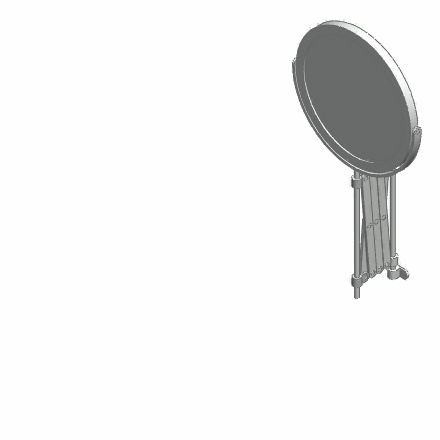
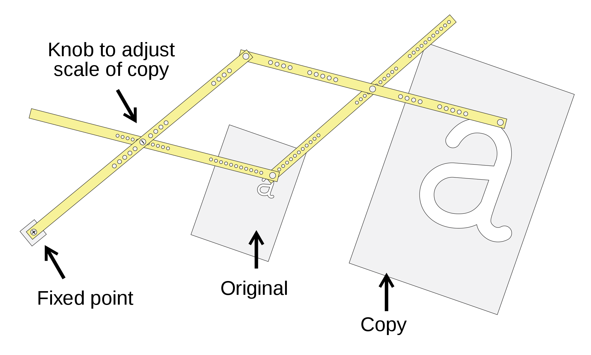
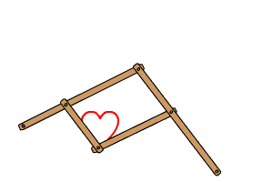
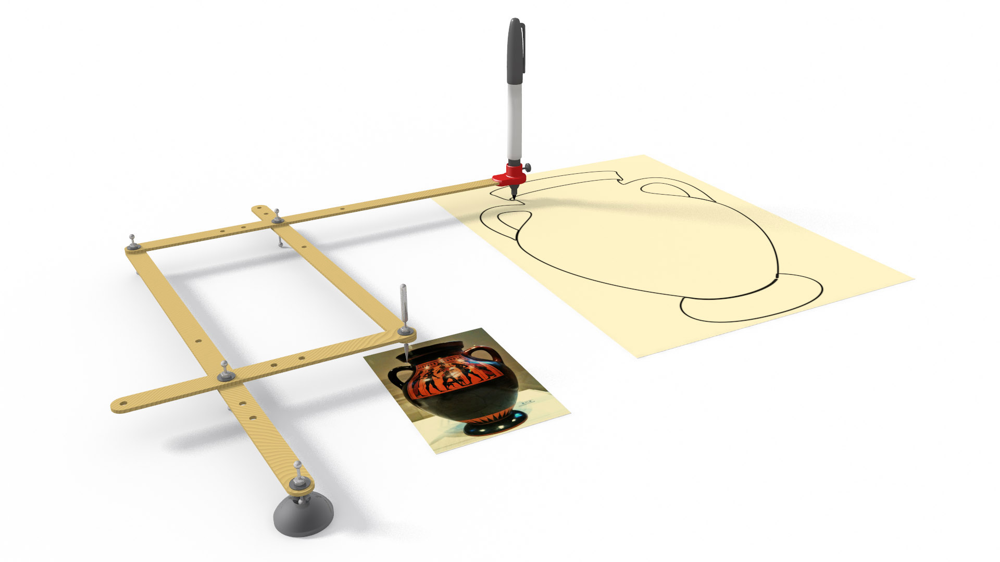
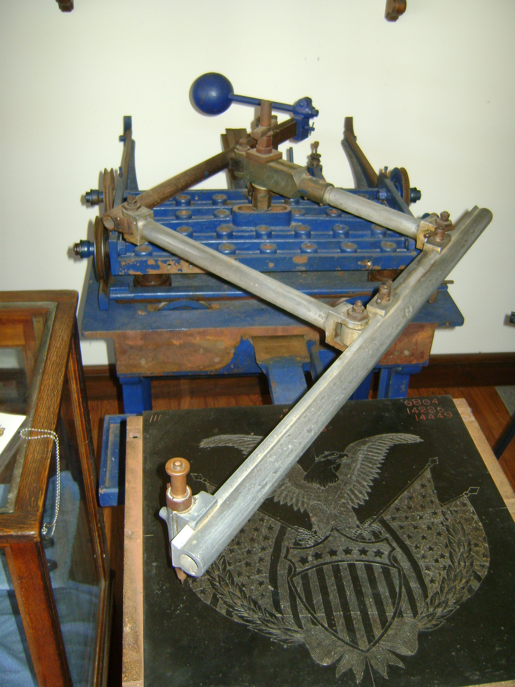

scissor linkages revision 3581

Introduction
Challenges
Approaches
Pantograph




A '''pantograph''' (Greek roots παντ- "all, every" and γραφ- "to write", from their original use for copying writing) is a mechanical linkage connected in a manner based on parallelograms so that the movement of one pen, in tracing an image, produces identical movements in a second pen. If a line drawing is traced by the first point, an identical, enlarged, or miniaturized copy will be drawn by a pen fixed to the other. Using the same principle, different kinds of pantographs are used for other forms of duplication in areas such as sculpture, minting, engraving, and milling.
Because of the shape of the original device, a pantograph also refers to a kind of structure that can compress or extend like an accordion, forming a characteristic rhomboidal pattern. This can be found in extension arms for wall-mounted mirrors, temporary fences, pantographic knives, scissor lifts, and other scissor mechanisms such as the pantograph used on electric locomotives and trams.
Tools
 Wrenches|Wrenches" loading="lazy">
Wrenches|Wrenches" loading="lazy">